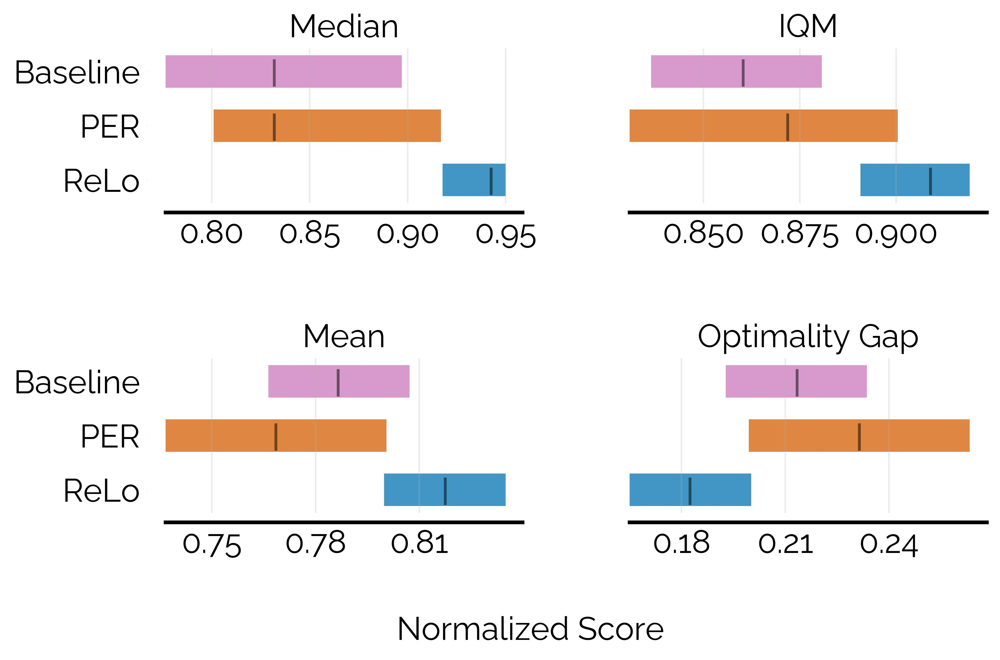
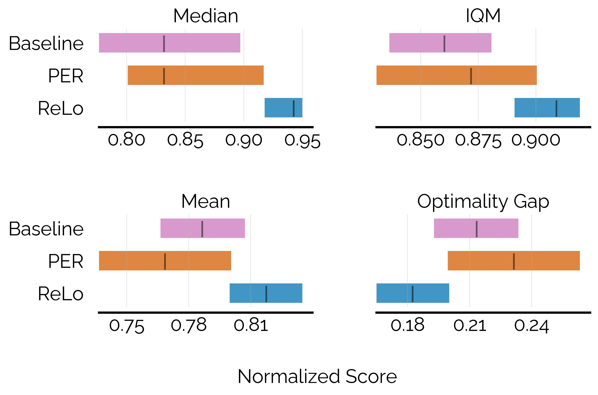
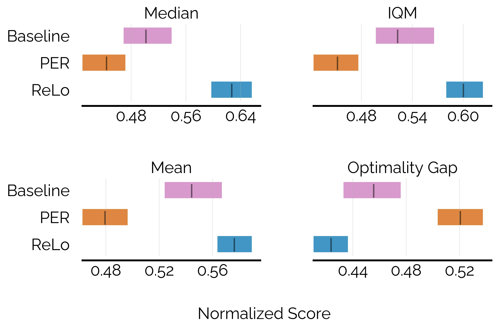

DM Control
In continous control tasks, ReLo improves performance of the baseline SAC and vanilla PER with SAC.
Most reinforcement learning algorithms take advantage of an experience replay buffer to repeatedly train on samples the agent has observed in the past. This prevents catastrophic forgetting, however simply assigning equal importance to each of the samples is a naive strategy.
We present the first method capable of photorealistically reconstructing a non-rigidly deforming scene using photos/videos captured casually from mobile phones.
In this paper, we propose a method to prioritize samples based on how much we can learn from a sample. We define the learn-ability of a sample as the steady decrease of the training loss associated with this sample over time. We develop an algorithm to prioritize samples with high learn-ability, while assigning lower priority to those that are hard-to-learn, typically caused by noise or stochasticity.
We empirically show that our method is more robust than random sampling and also better than just prioritizing with respect to the training loss, i.e. the temporal difference loss, which is used in vanilla prioritized experience replay.
Across continous and discrete tasks, ReLo shows consistent improvements over vanilla PER, while also producing agents that have lower TD error compared to random sampling and vanilla PER. ReLo can be applied to any off policy Q learning method with minimal changes to existing codebases
Vanilla PER focuses on data points with high TD loss, but such points could have high loss because they are noisy or not learnable by the model. Instead of prioritization based on the TD error, we propose that the agent should focus on samples that have higher reducible TD error, using a measure of how much the TD error can be potentially decreased. This is better because it means that the algorithm can avoid repeatedly sampling points that the agent has been unable to learn from and can focus on minimizing error on points that are learnable, thereby improving sample efficiency. Motivated by prior work in supervised learning through the RHO Loss, we propose a scheme of prioritization tailored to the RL problem.
Mindermann et al. propose using a hold out model trained on validation data to provide an estimate of the reduction in loss that can be acheived by training on a sample. However, the concepts of a hold-out dataset or model are not well defined in the RL paradigm. In Q learning based RL methods, a good proxy for the hold-out model is the target network as it is only periodically updated with the online model parameters. It retains the performance of the agent on older data which are trained with outdated policies.
In this way, we define the Reducible Loss (ReLo) for RL as the difference between the loss of the data point with respect to the online network (with parameters $\theta~$) and the target network (with parameters $\theta_{tgt}$). So the Reducible Loss (ReLo) can be computed as $$ReLo = L_\theta + L_{\theta_{tgt}}$$
Data points that were not important under PER, i.e. they have low $L_\theta$, will also remain unimportant in ReLo. If $L_\theta$ is low, then the difference between online and target losses, i.e.e ReLo will also be low. So we retain the desirable behavior of PER, which is to not repeatedly sample points that have already been learned. However, there is a difference in sampling points that have high TD error. PER would assign high priority to data points with high TD error, regardless of whether or not those data points are noisy or unlearnable. Hence its priority should be reduced since there might be other data points that are worth sampling more because they have useful information which would enable faster learning. The ReLo of such a point would be low because both $L_\theta$ and $L_{\theta_{tgt}}$ would be high. In case a data point is forgotten, then the $L_\theta$ would be higher than $L_{\theta_{tgt}}$ , and the ReLo would ensure that these points are revisited.
In continous control tasks, ReLo improves performance of the baseline SAC and vanilla PER with SAC.
In the MinAtar benchmark, while naive prioritization hurts performance, ReLo matches or exceeds the baseline.
We compared ReLo on a subset of environments from the Arcade Learning Environment, using Rainbow as a baseline. The methods were evaluated in the resource constrained setting with a training budget of 2M frames. ReLo shows an improvement in performance over Rainbow in this setting.
@article{sujit2022prioritizing,
title = {Prioritizing Samples in Reinforcement Learning with Reducible Loss},
author = {Shivakanth Sujit and Somjit Nath and Pedro H. M. Braga and Samira Ebrahimi Kahou},
year = {2022},
journal = {arXiv preprint arXiv: Arxiv-2208.10483}
}